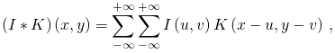
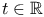
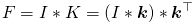
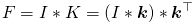
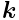
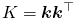
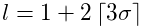
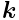
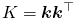
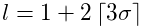

Convolution
A two-dimensional discrete convolution is defined as
|  | (1) |
where  is an image of size
is an image of size  , and
, and  is a convolution
kernel of arbitrary size. Values outside the domains of
is a convolution
kernel of arbitrary size. Values outside the domains of  and
and  are set to zero.
are set to zero.
Convolution can be a time demanding operation when implemented according
to the definition in Equation (1). To speed up the algorithms,
we use a method known as convolution with separable kernels. This
allows one to calculate the convolution of the image  with the
kernel
with the
kernel  as
as
|  | (2) |
if the kernel  can be written as .
Here the kernel
can be written as .
Here the kernel  is an
is an  matrix and .
Using the method of separable kernels reduces the time complexity
of the convolution from  to .
matrix and .
Using the method of separable kernels reduces the time complexity
of the convolution from  to .
See also
Generated on Sun Oct 4 04:18:01 2015 by LaTeXML ![[LOGO]]()